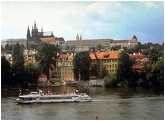
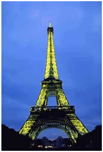
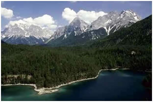
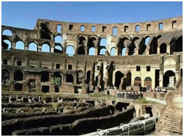

- Anita Menon

It was an amazing experience, being both educational and enjoyable. We travelled to 20 cities in 11 countries visiting both East and West Europe.The differences between the East and the West are becoming less apparent as border controls ease and the restrictions of communism fade. Two of our favourite cities we visited were, in fact, Prague and Budapest.
These two cities were very scenic and full of atmosphere. Prague was especially cheap - a decent sized meal coming to just over £1. Other than this we were surprised at how western these two cities seemed to be. For a taste of the Eastern Europe we were expecting, we visited Sofia in Bulgaria and Bucharest in Romania. Sofia has a lot of impressive churches and we ended up seeing three Bulgarian weddings! We stayed with a Bulgarian family who were so friendly and went out of their way to please us. Bucharest seemed quite serene with a huge palace as its main sight. We also hired a small rowing boat and took a ride on a beautiful lake there for only a few pence each.
We also visited Berlin, where a trip to the Checkpoint Charlie museum highlighted just how much Eastern Europe has changed. The visit to the museum was actually quite emotional, both harrowing stories of people trying to escape the DDR regime and then videos of the reunification 28 years later were very moving. A lot of the remnants of the old East Berlin have been destroyed, along with anything to do with Hitler and the second world war. This is apparently, to stop Neo-Nazis in Germany using such remains as shrines. I would definitely recommend going on a guided walking tour in Berlin, as without a guide to explain things to you, there isn't much to see.
Standing on the ground where some of the most horrendous atrocities had been committed was an indescribable experience. We also visited a concentration camp, now a memorial to those who died here, in Dachau. This too left us with the same feeling. For further stories of World War II, we visited Anne Frank's house in Amsterdam, where she and her family were in hiding from the Nazis.
The rest of our holiday was much more light-hearted - whether it was strolling down the Champs-Elysee in Paris on the way to the Eiffel Tower, chatting in the beer gardens in Munich, taking a gondola ride on the canals in Venice, driving through the Alps (we hired a car), appreciating the art in Florence and architecture in Rome, exploring the remains of the Acropolis in Athens or relaxing on the red and black beaches of Santorini (a Greek volcanic island) where the break from the seemingly constant moving around was much appreciated.

We often only got to spend a day in a city due to lack of time, although in Pisa we stopped off for only a couple of hours as, other than the famous leaning tower, there wasn't much else to see there. In Zurich and Vienna our short stay was as a result of the cities being too expensive. Occasionally, sleeping in the station waiting room was necessary to avoid the unaffordable accommodation costs! Zurich actually had a very pleasant and safe waiting room which was protected by guards and only open to people in possession of a valid train ticket for the next day. For girls travelling alone though, I would not recommend this in the rest of the cities we visited. In these places, generally we were very lucky with accommodation, and we managed to find nice but cheap places to stay.
I think the best thing about our holiday was the number of different people we met - both locals and other Travellers. Everybody we came across was very hospitable. Six weeks went far too quickly, though I was impressed at how much we managed to cram in. It was an experience. I will never forget and one I heartily recommend to anyone who has a desire to see and learn a little bit more of life than they already have·